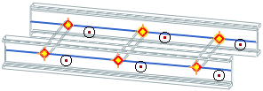
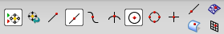
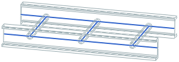

Connect the arc centers highlighted in the following figure to model the rungs.

The Line dialog box is open from the previous step.

Enable Snap Point, Arc Center (Selection Bar)
(All other Snap Point options should be deselected.)
Select pairs of arc centers to create line segments that model the ladder's rungs, as shown in the animation.
|
Apply |
after selecting each pair of points |
|
Cancel |
Line dialog box |
